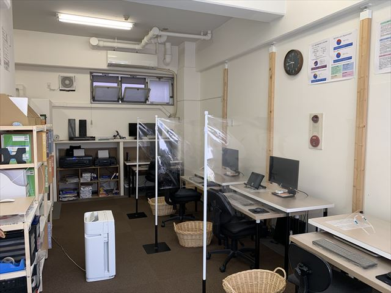
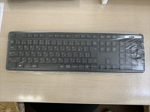
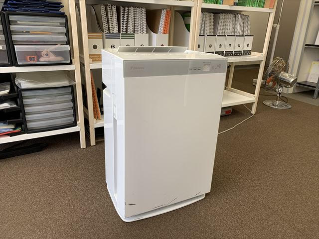

『日々役立つ』パソコン操作が、身につきます！
継続しやすい料金
安心の料金システムで
納得いくまで通えます
個 別 指 導
少人数個別指導で
丁寧にご説明いたします
納 得 指 導
長年の実績から生まれた
オリジナルカリキュラム
自 由 受 講
予約時間は自由に組め
自分のペースで学べます
ご挨拶

キュリオステーション菊川店の矢野と申します。店長およびインストラクタ―をさせて頂いております。2007年5月から菊川で教室を運営させて頂き、今年の5月で満17年目を迎えました。
教室では、開校以来地元の皆様や仕事でパソコンを活用したい多くの方々に教室をご利用いただております。
教室の特徴は、個人事業主の方やフリーランスで仕事をされている方が多く、ご自身の資料作成の困ったところを解決するために通われている方が多いこと。
また、最近ではコロナ禍にともない、リモートワークとなったのでパソコンの操作をしっかりと身に着けたい。そして、わからないことが発生したときには質問がしたいという方が増えております。
インストラクションの際に大切にしていることは、やりたいことができるようにお話をよく伺うこと。そして、学習や練習だけでなく、学んだことを活かせるように皆さんがやりたいことにはどのソフトや操作で行うのが一番よいのかと一緒に考えていくことです。
パソコンや各ソフトの使い方をしっかりとマスターして頂き、ぜひお仕事やプライベートでご活用下さい！
キュリオ菊川で学べるコースはこちら！（丸に触れると各コースの詳細が見られます）


教室からのお知らせ
３月の教室運営につきまして（３月最新版）
キュリオステーション菊川店の生徒の皆様ならびにお問合せの皆様へ
平素より教室をご利用いただきまして誠にありがとうございます。また、感染拡大防止に日々ご尽力されている皆様、そして日々の暮らしを支えてくださっている皆様に引き続き、深く感謝申し上げます。
教室では、感染症予防対策を十分取り安全に配慮したうえで通常通り教室を継続いたします。
菊川店では教室の1時間の人数を６人までとし、完全予約制にて授業を行っております。生徒様におかれましては教室よりお配りの『教室の利用のしかた』パンフレットに詳細がございますので、ご確認くださいますようよろしくお願い致します。
また、無料カウンセリングは随時行っておりますので、教室にご興味のある皆様におかれましては、当ホームページよりご予約または、直接お電話にてご予約をいただければと思います。無料カウンセリングの際には、マスクの着用とアルコールによる手指の消毒にご協力くださいますよう、よろしくお願いします。
今後も東京都におけるコロナウィルス感染者数の増減を確認しながら教室運営および、無料カウンセリングのご予約を行ってまいりますので、何卒ご了承くださいませ。
キュリオステーション菊川店 店長 矢野
キュリオステーション菊川店におけるコロナ対策
安心・安全に学んでいただくために教室では以下のコロナ対策を常時行っております。
対策その①十分に間隔のあいたお席をご用意しております。
お越しになった方同士の距離、インストラクターとの距離が十分にとれるようレイアウトを変更いたしました。互いの飛沫を気にせず、学ぶべます。
対策その②マスクを装着してのインストラクションを行います。
インストラクションを行う際は、マスクを装着してインストラクションを行います。
対策その③授業後のキーボード・マウス・テキストの消毒の徹底
キーボードとマウス、並びに皆様にお使いいただきました教室テキストの消毒は、授業が終了するごとに行います。次亜塩素酸水を用いて消毒を行います。キーボードには、シャンプーハットタイプのカバーを装着しており、より衛生的に汚れをふき取れるようにしてあります。
対策その④換気と加湿の徹底
教室は、常時外からの空気が教室内を通り、外へ流れるように喚起を行っております。また、空気清浄機を導入し空気を清潔に保っております。夏はエアコンとミニ扇風機を各テーブルに設置、冬はエアコン、遠赤外線ヒーターと加湿器を用いて室温を快適な状態に保っており、快適に授業を受けることができます。

What's New 新着情報
2024.02.01 2月も教室は運営しております！
2024.01.05 1月も教室は運営しております！
2023.08.01 8月も教室は運営しております！
2022.06.03 6月も教室は運営しております！
2022.03.01 3月も教室は運営しております！
2021.12.03 12月も教室は運営しております！
2022年1月より授業料を改定いたします。
2021.11.04 11月も教室は運営しております！
2021.10.04 10月も教室は運営しております！
2021.09.06 9月も教室は運営しております！
2021.08.06 8月も教室は運営しております！
2021.07.06 7月も教室は運営しております！
2021.04.06 4月も教室は運営しております！
2021.03.09 3月も教室は運営しております！
2021.02.04 2月も教室は運営しております！
2021.01.01 1月も教室は運営しております！
2020.12.01 12月も教室は運営しております！
2020.11.01 11月も教室は運営しております！
2020.10.01 10月も教室は運営しております！
2020.09.01 9月も教室は運営しております！
2020.08.01 8月も教室は運営しております！
2020.07.01 7月も教室は運営しております！
2020.05.30 6月2日（火）より教室を再開いたします！
2020.05.07 新型コロナウィルス感染症対策といたしまして5月7日～5月31日まで臨時休校を延長いたします。
2020.04.11 新型コロナウィルス感染症対策といたしまして4月11日～5月6日まで臨時休校とさせていただきます。
2020.03.07 4月度 新型コロナウィルス感染症対策と対応につきまして上記トピックにご案内しております。
2020.03.03 新型コロナウィルス感染症対策と対応につきまして上記トピックにご案内しております。
2020.02.19 MOS試験対策のコース内容と価格をリニューアルいたしました。
2017.04.19 教室のホームページをリニューアルいたしました。
2015.10.01 教室でWindows10を導入いたしました。
2015.06.01 キュリオステーション菊川店オフィシャルWebサイトのURLが変更となりました。
今後は、https://curio-kikukawa.net/となります。今後とも宜しくお願いいたします。
スクールのご案内
| 店 名 | キュリオステーション菊川店 |
|---|---|
| 住 所 | 〒130-0024 東京都墨田区3-21-11レジデンス須賀 菊川１F |
| 連 絡 | ＴＥＬ 03-3633-5781
ＦＡＸ 03-3633-5781 |
| 営業時間 | 火・水・金 12：00～20：00
木・土 10：00～18：00 |
| 定 休 日 | 日・月曜日・祝日・その他 |
| 駐 車 場 | なし |
| O S | windows11（4台） |
| Office | Microsoft Office 2016・2019・2021 |
| そ の 他 | プリンター2台・A3スキャナ・ネット環境有り・PC持込OK! |
アクセス
◎バスをご利用の方
【錦糸町方面】錦11又は東20のバス 菊川三丁目停留所 徒歩2分
◎地下鉄をご利用の方
・地下鉄都営新宿線 菊川駅 A3出口 徒歩6分
・新大橋通りを住吉方面200m スーパー「オオゼキ」さんの見える信号を左折し、スーパーを通り越して、130ｍ進むと左手に教室が見えます。同じ建物にはドミノピザが入っています。
◎お車でお越しの方
駐車場はございませんので、近隣の100円パーキングをご利用ください。